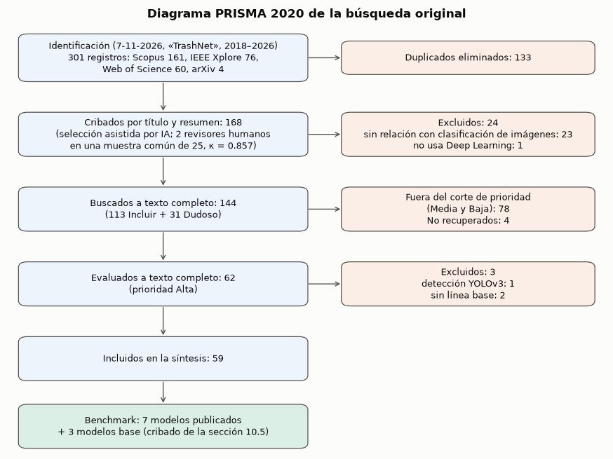
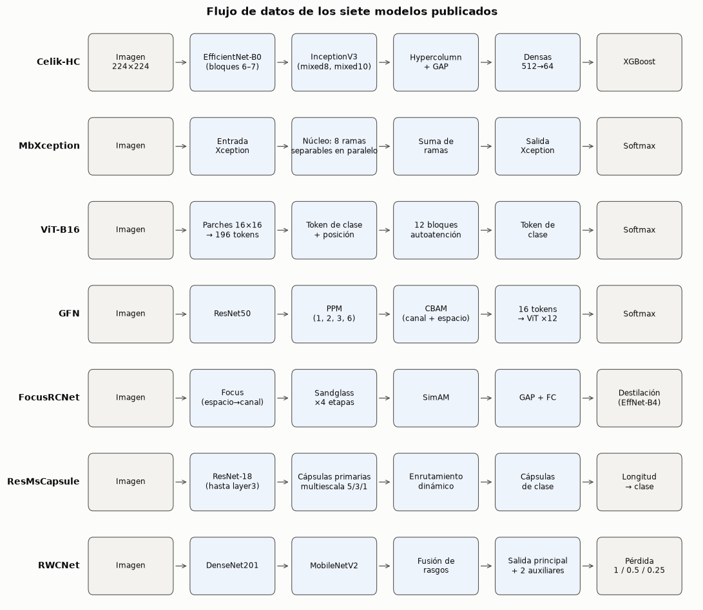

10. Revisión sistemática ampliada y selección de los modelos#
En este capítulo extendemos la revisión del capítulo 3. Documentamos las dos búsquedas, los criterios, el diagrama PRISMA y el acuerdo entre revisores. Presentamos la hoja de extracción y la calidad metodológica de los estudios, y seleccionamos y analizamos los siete modelos publicados del benchmark. Cerramos con la búsqueda transversal de mecanismos en otras modalidades y con la brecha de investigación. Los datos, las respuestas crudas de las bases y los scripts están en entregable2/revision_sistematica/.
Cadenas registradas: 30 | estudios en la hoja de extracción: 63 | elegibles para el benchmark: 36
10.1 Estrategia de búsqueda y bases de datos#
La revisión combina dos búsquedas.
Búsqueda original (7 de noviembre de 2026). Es la del capítulo 3 y produce el PRISMA principal.
Cadenas exploratorias: primero se probaron cuatro cadenas amplias en Scopus, entre las 16:25 y las 16:30. Dieron 1407, 982, 559 y 477 resultados y se descartaron por ruido: residuos de construcción, rutas de recolección y espectroscopía.
Cadena definitiva: “TrashNet”, que restringe la revisión a estudios comparables con nuestro conjunto de datos.
Base |
Hora |
Cadena exacta |
Filtros |
Resultados finales |
|---|---|---|---|---|
Scopus |
16:29 |
|
En la cadena |
161 |
IEEE Xplore |
16:43 |
|
2018–2026 |
76 |
Web of Science |
16:54 |
|
En la consulta |
60 |
arXiv (complementaria) |
17:15 |
|
2018–2026 |
4 |
Búsqueda ampliada (16 de noviembre de 2026). Mide qué deja fuera la restricción a “TrashNet”. Se ejecutó en IEEE Xplore (campo All Metadata) y en arXiv y OpenAlex por API, que permiten descargar y guardar los registros completos. Usa tres cadenas sobre el problema:
P1: dominio, tarea y método con sinónimos;
P2: “TrashNet”;
P3: transferencia desde modelos preentrenados.
La consulta exacta enviada a cada base, la fecha y hora (UTC) y el número de resultados están en entregable2/revision_sistematica/datos/registro_cadenas.csv. IEEE Xplore, una de las bases principales del área, aporta solo el número de resultados de cada cadena; sus registros no se descargaron. El cribado se hizo sobre los registros de OpenAlex y arXiv, cuyas API permiten guardar, deduplicar y cribar de forma reproducible todos los registros recuperados.
Función de cada búsqueda. La búsqueda original define el corpus de la síntesis: los 59 estudios incluidos, la hoja de extracción y la selección de los modelos. La búsqueda ampliada mide la cobertura de la original y no añade estudios a la síntesis; sus registros se criban con las mismas reglas X0–X5 y quedan registrados en cribado_principal.csv.
Periodo: 2018–2026. TrashNet se publicó en 2016–2017 y la literatura de Deep Learning sobre el problema empieza en 2018. Los trabajos fundacionales anteriores se admiten solo como fuentes primarias de mecanismos (sección 10.8).
r = reg.copy()
r["base_corta"] = r.base.str.split(" ").str[0]
tab = r[r.tipo == "principal"].pivot_table(index="id", columns="base_corta", values="n_resultados", aggfunc="first")
display(tab)
| base_corta | IEEE | OpenAlex | arXiv |
|---|---|---|---|
| id | |||
| P1 | 1839 | 3326 | 88 |
| P2 | 77 | 242 | 4 |
| P3 | 208 | 150 | 7 |
10.2 Criterios de inclusión y exclusión#
Inclusión (todos deben cumplirse):
Código |
Criterio |
|---|---|
I1 |
Estudio primario: artículo de revista, congreso o preprint |
I2 |
Residuos sólidos domésticos o municipales reciclables |
I3 |
Datos de imagen (RGB) |
I4 |
Tarea de clasificación o reconocimiento del tipo de residuo |
I5 |
Método de Deep Learning |
I6 |
Publicado entre 2018 y 2026 |
Exclusión por título y resumen (se registra la primera regla que falla):
Código |
Motivo |
|---|---|
X0 |
Documento no elegible: tesis, conjunto de datos, software, editorial, libro, resumen, fe de erratas |
X1 |
Revisión, encuesta o estudio bibliométrico |
X2 |
Fuera del dominio: “waste” en otro sentido, residuos de alimentos, electrónicos, de construcción, médicos o aguas residuales |
X3 |
No usa imágenes |
X4 |
Tarea distinta de la clasificación: detección, segmentación, conteo o predicción |
X5 |
No usa Deep Learning |
A texto completo se exigen métricas reportadas, detalle suficiente para reproducir (arquitectura, partición y entrenamiento) o código, y una revista o congreso de calidad verificable. La calidad de la revista se mide con el 2-year mean citedness de OpenAlex en todos los estudios y con el cuartil SJR en los siete del benchmark.
10.3 Diagrama PRISMA 2020 y acuerdo entre revisores#
El flujo de registros sigue la declaración PRISMA 2020 (Page et al., 2021), la guía de reporte de revisiones sistemáticas que define las etapas de identificación, cribado, elegibilidad e inclusión, y exige reportar las exclusiones con su motivo en cada etapa.
fig, ax = plt.subplots(figsize=(10, 7.2))
ax.set_xlim(0, 10); ax.set_ylim(0, 12); ax.axis("off")
def caja(x, y, w, h, txt, fc="#eef4fc"):
ax.add_patch(FancyBboxPatch((x, y), w, h, boxstyle="round,pad=0.02,rounding_size=0.15", fc=fc, ec=FG.INK2, lw=0.8))
ax.text(x + w / 2, y + h / 2, txt, ha="center", va="center", fontsize=8.4, color=FG.INK)
def flecha(x0, y0, x1, y1):
ax.annotate("", (x1, y1), (x0, y0), arrowprops=dict(arrowstyle="->", color=FG.INK2, lw=0.9))
caja(0.2, 10.4, 4.8, 1.3, "Identificación (7-11-2026, «TrashNet», 2018–2026)\n301 registros: Scopus 161, IEEE Xplore 76,\nWeb of Science 60, arXiv 4")
caja(5.6, 10.6, 4.2, 0.9, "Duplicados eliminados: 133", fc="#fbeee7")
caja(0.2, 8.3, 4.8, 1.2, "Cribados por título y resumen: 168\n(selección asistida por IA; 2 revisores humanos\nen una muestra común de 25, κ = 0.857)")
caja(5.6, 8.3, 4.2, 1.2, "Excluidos: 24\nsin relación con clasificación de imágenes: 23\nno usa Deep Learning: 1", fc="#fbeee7")
caja(0.2, 6.2, 4.8, 1.2, "Buscados a texto completo: 144\n(113 Incluir + 31 Dudoso)")
caja(5.6, 6.2, 4.2, 1.2, "Fuera del corte de prioridad\n(Media y Baja): 78\nNo recuperados: 4", fc="#fbeee7")
caja(0.2, 4.1, 4.8, 1.2, "Evaluados a texto completo: 62\n(prioridad Alta)")
caja(5.6, 4.1, 4.2, 1.2, "Excluidos: 3\ndetección YOLOv3: 1\nsin línea base: 2", fc="#fbeee7")
caja(0.2, 2.0, 4.8, 1.2, "Incluidos en la síntesis: 59")
caja(0.2, 0.1, 4.8, 1.2, f"Benchmark: 7 modelos publicados\n+ 3 modelos base (cribado de la sección 10.5)", fc="#dcefe6")
for y0, y1 in [(10.4, 9.5), (8.3, 7.4), (6.2, 5.3), (4.1, 3.2), (2.0, 1.3)]:
flecha(2.6, y0, 2.6, y1)
for y in (11.05, 8.9, 6.8, 4.7):
flecha(5.0, y, 5.6, y)
ax.set_title("Diagrama PRISMA 2020 de la búsqueda original")
plt.show()

Priorización de la lectura a texto completo. La lectura a texto completo se concentró en los 62 registros de prioridad Alta: artículos de revista marcados como Incluir o registros con al menos 10 citas. Este criterio dirige el análisis detallado a los estudios de mayor impacto y con revisión por pares completa, que son los que la comunidad usa como referencia. Los 78 registros de prioridad Media o Baja (en su mayoría ponencias con menos de 10 citas) quedan identificados y clasificados en la hoja Registros del Excel de selección. Como las citas se acumulan con el tiempo, este corte favorece a los estudios más antiguos: 50 de los 78 registros no leídos son de 2025 o 2026 (mediana 2025), frente a 25 de los 66 de prioridad Alta (mediana 2024).
Relación con el capítulo 3. El capítulo 3 reporta 143 candidatos a texto completo y 81 no evaluados, porque cuenta la decisión preliminar del cribado (113 Incluir y 30 Dudoso). Al resolver las discrepancias de la muestra común, R132, que el cribado preliminar excluía, pasó a texto completo como Dudoso, porque los dos revisores humanos lo enviaron a esa etapa. Con la decisión final, que registra la hoja Registros, los candidatos son 144 (113 Incluir y 31 Dudoso), los excluidos en el cribado son 24 y los no evaluados son 82: 78 fuera del corte de prioridad, entre ellos R132, y 4 sin texto completo disponible.
Selección y acuerdo entre revisores. El cribado por título y resumen de los 168 registros lo hizo de forma preliminar un asistente de IA (Claude), con la hoja de criterios del Excel. Dos revisores humanos (H1 y H2) decidieron de forma independiente una muestra común de 25 registros:
Comparación (n = 25) |
Acuerdo observado |
κ de Cohen (Incluir, Dudoso, Excluir) |
κ de Cohen (pasa o se excluye) |
|---|---|---|---|
H1 frente a H2 |
0.92 |
0.857 |
1.000 |
H1 frente a IA |
0.92 |
0.860 |
0.896 |
H2 frente a IA |
0.96 |
0.925 |
0.896 |
El κ de Cohen (Cohen, 1960) corrige el acuerdo observado por el que se esperaría solo por azar, dadas las proporciones de cada decisión: vale 0 si los revisores coinciden como dos clasificadores aleatorios y 1 si coinciden siempre. Para leer su magnitud usamos la escala de Landis y Koch (1977), la referencia habitual para κ: 0.41–0.60 es acuerdo moderado, 0.61–0.80 sustancial y 0.81–1.00 casi perfecto. El κ de 0.857 entre los dos revisores humanos cae en el tramo casi perfecto: coinciden en 23 de los 25 registros con tres categorías (acuerdo observado de 0.92) y en los 25 en la decisión de pasar o no a texto completo (κ = 1.000). Las dos discrepancias (R100 y R132) afectaban a la etiqueta y no al paso a texto completo: en ambos registros un revisor humano marcó Dudoso y el otro Incluir. La etiqueta de R100 (Incluir) se fijó por mayoría con el voto del cribado asistido por IA, que también marcó Incluir; en R132 no hubo mayoría y quedó como Dudoso. En los dos casos, el paso a texto completo es la decisión común de los dos revisores humanos.
fl = pd.DataFrame({"etapa": ["Identificados en OpenAlex (P1 + P2 + P3)", "Identificados en arXiv", "Solo conteo en IEEE Xplore (P1 + P2 + P3)",
"Duplicados eliminados", "Cribados por título y resumen", "Excluidos por reglas (X0–X5)", "Pasan el cribado",
"Registros del corpus original recuperados"],
"n": [pc["identificados_por_base"]["OpenAlex"], pc["identificados_por_base"]["arXiv"], pc["solo_conteo_IEEE_Xplore"]["total"],
pc["duplicados_eliminados"], pc["cribados"], pc["cribados"] - pc["decisiones"]["INCLUIDO"],
pc["decisiones"]["INCLUIDO"], f"{pc['corpus_recuperado']} de {pc['corpus_total']}"]})
display(fl)
display(pd.Series({k: v for k, v in pc["decisiones"].items() if k != "INCLUIDO"}, name="excluidos").to_frame())
| etapa | n | |
|---|---|---|
| 0 | Identificados en OpenAlex (P1 + P2 + P3) | 3718 |
| 1 | Identificados en arXiv | 99 |
| 2 | Solo conteo en IEEE Xplore (P1 + P2 + P3) | 2124 |
| 3 | Duplicados eliminados | 383 |
| 4 | Cribados por título y resumen | 3434 |
| 5 | Excluidos por reglas (X0–X5) | 1876 |
| 6 | Pasan el cribado | 1558 |
| 7 | Registros del corpus original recuperados | 60 de 63 |
| excluidos | |
|---|---|
| X0 tipo de documento no elegible (libro, capítulo, tesis, dataset u otro) | 198 |
| X1 revisión o encuesta, no estudio primario | 146 |
| X2 fuera del dominio de residuos | 1278 |
| X3 no usa imágenes (sensores, espectros, texto o series) | 2 |
| X4 tarea distinta de clasificación (detección, segmentación, conteo, predicción) | 241 |
| X5 no usa Deep Learning | 11 |
Cobertura de la búsqueda original. La búsqueda ampliada recupera 60 de los 63 registros del corpus (95 %). Esta cifra mide la sensibilidad de la búsqueda ampliada frente al corpus, no la relevancia de los 78 registros no leídos. El único registro recuperado que sus reglas excluyen (R007, detección) es el mismo que el equipo excluyó a texto completo, lo que muestra que los criterios de las dos búsquedas son coherentes.
De los 1558 registros que pasan el cribado de la búsqueda ampliada, 1499 no están en el corpus. 1376 no mencionan TrashNet en el título ni en el resumen: son estudios de clasificación de residuos con otros conjuntos de datos o sin conjunto declarado en el resumen. Los otros 123 sí lo mencionan; los devolvió la cadena P2 en OpenAlex, que busca en el título y el resumen, y no las bases de la búsqueda original (Scopus, IEEE Xplore, Web of Science y arXiv). 121 de ellos solo están en OpenAlex y 77 son de 2025 o 2026. Ninguno de estos registros entra en la síntesis, cuyo corpus define la búsqueda original; quedan identificados en cribado_principal.csv para extenderla.
Fuentes de los 123 registros que mencionan TrashNet. Cruzamos la fuente de cada registro con la lista oficial de fuentes de Scopus de octubre de 2026 (Elsevier): por ISSN y con cobertura en el año de publicación para revistas y series, y por el nombre de la serie y el año para las actas de congresos. El resultado de cada registro está en trashnet_fuera_corpus.csv, generado con fuera_corpus.py.
Tipo de fuente |
Indexada en Scopus |
No consta en Scopus |
Total |
|---|---|---|---|
Revista |
24 |
28 |
52 |
Congreso |
33 |
11 |
44 |
Serie de libros o de actas |
10 |
2 |
12 |
Capítulo de libro |
0 |
3 |
3 |
Repositorio de preprints |
— |
— |
9 |
Sin fuente identificada |
— |
— |
3 |
Total |
67 |
44 |
123 |
Algo más de la mitad (67) se publicó en fuentes indexadas en Scopus, en su mayoría actas de congresos (33) y revistas (24). Siete de los 11 congresos que no constan son de 2026; la hoja de actas de la lista llega a junio de 2026, de modo que parte de ellos puede deberse al desfase de indexación.
El cribado automático de la búsqueda ampliada se contrastó con un segundo revisor asistido por IA, que decidió sin ver la decisión de las reglas:
Muestra de calibración: 60 registros, con los que se corrigieron las reglas.
Muestra de validación: 60 registros nuevos, con acuerdo de 0.833, κ = 0.669 (sustancial en la escala de Landis y Koch), sensibilidad de 0.93 y precisión de 0.77. Las reglas son conservadoras.
10.4 Hoja de extracción y calidad metodológica#
La hoja de extracción (entregable2/revision_sistematica/datos/hoja_extraccion.csv) tiene una fila por cada uno de los 63 registros del corpus: los 62 evaluados a texto completo y R086 (Zhu, 2024), uno de los cuatro registros de prioridad Alta sin texto completo disponible. R086 está en el corpus de Zotero con sus metadatos; su fila se completó solo con el resumen y no entra en los 59 incluidos ni en los indicadores. Los campos son fijos:
Identificación: autores, año, título, DOI, revista y tipo;
Impacto: citas en OpenAlex y 2-year mean citedness de la revista;
Arquitectura y datos: familias, conjuntos de datos, partición, k-fold y conjunto de validación;
Resultados: métricas y accuracy;
Rigor: repeticiones o semillas, pruebas estadísticas, código público, baselines ajustados por igual y control de duplicados;
Calidad: riesgo de fuga, repeticiones y equidad de los baselines.
La extracción se hizo con patrones explícitos sobre el texto completo (entregable2/revision_sistematica/scripts/extraccion.py), y los siete estudios del benchmark se verificaron a mano. Las filas automáticas son orientativas.
inc = hoja[hoja.decision_TC_equipo == "Incluir"]
def cuenta(col, cond):
return int(cond(inc[col].astype(str)).sum())
sint = pd.DataFrame({
"indicador (59 incluidos)": ["Declara un conjunto de validación separado", "Usa validación cruzada k-fold", "Reporta más de una corrida o semilla",
"Usa alguna prueba estadística", "Código público oficial", "Declara baselines ajustados por igual",
"Riesgo de fuga alto", "Riesgo de fuga medio", "Riesgo de fuga bajo"],
"estudios": [cuenta("conjunto_validacion", lambda s: s == "Sí"), cuenta("k_fold", lambda s: ~s.str.startswith("No")),
cuenta("repeticiones", lambda s: s.str.startswith("Varias")), cuenta("pruebas_estadisticas", lambda s: s != "No"),
cuenta("codigo_publico", lambda s: s == "Sí, oficial"), cuenta("equidad_baselines", lambda s: s == "Declarada"),
cuenta("riesgo_fuga", lambda s: s.str.startswith("Alto")), cuenta("riesgo_fuga", lambda s: s.str.startswith("Medio")),
cuenta("riesgo_fuga", lambda s: s.str.startswith("Bajo"))]})
sint["%"] = (100 * sint.estudios / len(inc)).round(0).astype(int)
display(sint)
| indicador (59 incluidos) | estudios | % | |
|---|---|---|---|
| 0 | Declara un conjunto de validación separado | 24 | 41 |
| 1 | Usa validación cruzada k-fold | 19 | 32 |
| 2 | Reporta más de una corrida o semilla | 9 | 15 |
| 3 | Usa alguna prueba estadística | 9 | 15 |
| 4 | Código público oficial | 2 | 3 |
| 5 | Declara baselines ajustados por igual | 12 | 20 |
| 6 | Riesgo de fuga alto | 25 | 42 |
| 7 | Riesgo de fuga medio | 34 | 58 |
| 8 | Riesgo de fuga bajo | 0 | 0 |
Calidad metodológica. Clasificamos el riesgo de fuga en tres niveles:
Alto: no hay validación separada, o el conjunto de prueba selecciona el modelo.
Medio: hay validación o k-fold, pero sin control de duplicados.
Bajo: validación separada y control de duplicados.
Ninguno de los 59 estudios alcanza riesgo bajo, porque ninguno controla los casi-duplicados de TrashNet que el capítulo 2 identificó. 50 reportan una sola corrida y 47 no declaran que sus baselines se ajustaran con el mismo protocolo. En la hoja de calidad del capítulo 3, 13 de los 59 estudios usaban pruebas estadísticas; la extracción de esta etapa, con patrones más estrictos, encuentra 9. Con cualquiera de los dos conteos, la conclusión es la misma: la literatura sobre TrashNet casi nunca reporta varianza entre semillas ni pruebas de hipótesis.
Los siete estudios del benchmark (verificados a mano).
Modelo |
Estudio |
Partición |
Validación separada |
Repeticiones |
Pruebas estadísticas |
Código |
Accuracy publicada |
Citas (OpenAlex) |
Cuartil SJR (año de publicación) |
Riesgo de fuga |
|---|---|---|---|---|---|---|---|---|---|---|
Celik-HC (guía) |
Celik (2025), The Visual Computer |
80/20 aleatoria |
No: la época se elige con la prueba |
Una |
No |
Sí, oficial |
99.40 % |
15 |
Q2 |
Alto |
MbXception |
Shi et al. (2020), IEEE Access |
No reportada |
No declarada |
Una |
No |
Sí, oficial |
94.34 % |
64 |
Q1 |
Alto |
ViT-B16 |
Huang K. et al. (2021), Sustainability |
70/13/17 |
Sí |
Una |
No |
No |
96.98 % |
68 |
Q1/Q2 según la categoría |
Medio |
GFN |
Wang Z. et al. (2025), Electronics |
80/10/10 |
Sí |
Una |
No |
No |
94.21 % |
20 |
Q2 |
Medio |
FocusRCNet |
Zheng D. et al. (2023), VCIBA |
70/30 |
La validación hace de prueba |
Una |
No |
No |
~92 % |
21 |
Q2 |
Alto |
ResMsCapsule |
Huang L. et al. (2023), ESPR |
80/20, cuatro clases |
No declarada |
Media y DE por variante |
No |
No |
91.41 % |
10 |
Q1/Q2 según la categoría |
Alto |
RWCNet |
Hossen et al. (2024), IEEE Access |
70/20/10 con 5 pliegues |
Sí |
5 pliegues |
No |
No |
95.01 % |
127 |
Q1 |
Medio |
Cuatro de los siete se publicaron en revistas Q1. El paper guía (Q2) es el de mayor accuracy publicada y el que más se aleja en la réplica (capítulo 12). Ninguno compara modelos con pruebas de hipótesis.
Reproducibilidad de la literatura. Solo 2 de los 59 estudios publican su código oficial (Celik, 2025; Shi et al., 2020). Otros tres ofrecen código parcial, de terceros o a petición, y ninguno publica la partición usada. Esta escasez explica la elección del paper guía: era el único con código completo, condición necesaria para la réplica.
10.5 Selección de los modelos del benchmark#
Sobre los 62 estudios evaluados a texto completo aplicamos criterios propios del benchmark. Garantizan una comparación justa con un presupuesto de cómputo común y se aplican en orden; el primero que se cumple es el motivo registrado.
Código |
Criterio de exclusión para el benchmark |
Fuente de la evidencia |
|---|---|---|
E0 |
Excluido a texto completo en el capítulo 3 |
Hoja |
E1 |
TrashNet no es el conjunto principal de evaluación (menos de 3 menciones) |
Texto completo |
E2 |
No evalúa las seis clases de TrashNet |
Texto completo |
E3 |
La contribución depende de metaheurísticas, aprendizaje por refuerzo, GAN o aprendizaje federado, que entrenan el modelo decenas de veces y rompen la igualdad de presupuesto |
Título y resumen |
E4 |
Detección de objetos y no clasificación |
Título y resumen |
E5 |
Ensamble de varias redes completas (presupuesto desigual) |
Título y resumen |
Los indicadores son recuentos de términos, reproducibles con entregable2/analisis/revision_e2.py. La decisión de cada estudio está en entregable2/results/revision/cribado_e2.csv.
mot = cr.motivo_exclusion_e2.fillna("").replace("", "Elegible").str.replace(r"^(E\d): .*", r"\1", regex=True)
display(mot.value_counts().rename("estudios").to_frame())
| estudios | |
|---|---|
| motivo_exclusion_e2 | |
| Elegible | 36 |
| E3 | 12 |
| E5 | 5 |
| E2 | 4 |
| E0 | 3 |
| E1 | 1 |
| E4 | 1 |
ResMsCapsule es la única excepción al criterio E2: su artículo reporta resultados con cuatro clases. Lo incluimos porque es el único representante de la familia de redes de cápsulas, necesaria para la diversidad del benchmark, y lo entrenamos con las seis clases de TrashNet bajo el protocolo común. Su valor publicado no es comparable con el nuestro, y la adaptación se registra como desviación en el capítulo 11.
Puntaje de priorización#
La selección siguió cuatro requisitos, definidos antes de ver los resultados del benchmark:
un paper guía con código público completo, que permita la réplica del capítulo 12;
arquitectura definida en el artículo;
entrenamiento factible con el presupuesto común;
diversidad de al menos cuatro familias.
Para hacer la priorización reproducible, calculamos, sobre los estudios elegibles, un puntaje con cuatro componentes de igual peso en \([0, 1]\):
citas normalizadas por antigüedad: percentil de citas por año en OpenAlex, consultadas el 16 de noviembre de 2026;
recencia: \((\text{año} - 2018)/8\);
desempeño reportado en TrashNet: \((\text{accuracy} - 80)/20\), recortado a \([0, 1]\); 0.5 si no hay un valor reportado;
disponibilidad de implementación: 1 con código propio y 0.5 sin él.
En los siete estudios del benchmark, el componente de desempeño usa la accuracy verificada a mano en el texto completo (sección 10.4), porque la tabla de síntesis del capítulo 3 la deja vacía en cuatro de ellos (Celik-HC, RWCNet, GFN y MbXception); en los demás estudios usa la de esa tabla. ResMsCapsule no recibe puntaje porque no es elegible (criterio E2).
El puntaje no sustituye los requisitos. Es un orden de referencia dentro de cada familia, y verificamos a posteriori cuánto coincide con la selección.
el = cr[cr.elegible_e2 | cr.seleccionado_top7.notna()].copy()
cols = ["rango_puntaje", "autores_anio_titulo", "anio", "citas_openalex", "citas_por_anio", "acc_puntaje",
"codigo_propio", "s_citas", "s_recencia", "s_desempeno", "s_implementacion", "puntaje", "seleccionado_top7"]
t = el[cols].sort_values("rango_puntaje").copy()
t["autores_anio_titulo"] = t["autores_anio_titulo"].str.slice(0, 70)
t["codigo_propio"] = t["codigo_propio"].notna().map({True: "sí", False: "no"})
display(t.round(3).reset_index(drop=True))
| rango_puntaje | autores_anio_titulo | anio | citas_openalex | citas_por_anio | acc_puntaje | codigo_propio | s_citas | s_recencia | s_desempeno | s_implementacion | puntaje | seleccionado_top7 | |
|---|---|---|---|---|---|---|---|---|---|---|---|---|---|
| 0 | 1.0 | Celik G. - 2025 - Multi-layer feature fusion for high-accuracy solid w | 2025 | 15.0 | 7.500 | 99.40 | sí | 0.417 | 0.875 | 0.970 | 1.0 | 0.815 | Celik-HC (paper guía) |
| 1 | 2.0 | Nguyen N.-B.-Q. et al. - 2026 - Towards accurate and efficient waste i | 2026 | 14.0 | 14.000 | 99.72 | no | 0.750 | 1.000 | 0.986 | 0.5 | 0.809 | NaN |
| 2 | 3.0 | Hossen M.M. et al. - 2024 - A Reliable and Robust Deep Learning Model | 2024 | 127.0 | 42.333 | 95.01 | no | 1.000 | 0.750 | 0.751 | 0.5 | 0.750 | RWCNet |
| 3 | 4.0 | Devi A. et al. - 2025 - Transforming waste management leveraging recyc | 2025 | 16.0 | 8.000 | 99.15 | no | 0.444 | 0.875 | 0.958 | 0.5 | 0.694 | NaN |
| 4 | 5.0 | Li L. et al. - 2025 - Enhanced ResNet-50 for garbage classification Fe | 2025 | 40.0 | 20.000 | NaN | no | 0.889 | 0.875 | 0.500 | 0.5 | 0.691 | NaN |
| 5 | 6.0 | Wang Z. et al. - 2025 - GFN A Garbage Classification Fusion Network In | 2025 | 20.0 | 10.000 | 94.21 | no | 0.611 | 0.875 | 0.710 | 0.5 | 0.674 | GFN |
| 6 | 7.0 | Alrayes F.S. et al. - 2023 - Waste classification using vision transfo | 2023 | 62.0 | 15.500 | 95.80 | no | 0.778 | 0.625 | 0.790 | 0.5 | 0.673 | NaN |
| 7 | 8.0 | Kumar Lilhore U. et al. - 2025 - Intelligent waste sorting for sustain | 2025 | 34.0 | 17.000 | NaN | no | 0.806 | 0.875 | 0.500 | 0.5 | 0.670 | NaN |
| 8 | 9.0 | Abu-Qdais H. et al. - 2025 - Intelligent system for solid waste classi | 2025 | 17.0 | 8.500 | 96.06 | no | 0.472 | 0.875 | 0.803 | 0.5 | 0.663 | NaN |
| 9 | 10.0 | Zhou H. et al. - 2025 - Optimizing Backbone Networks Through Hybrid–Mo | 2025 | 8.0 | 4.000 | 96.88 | no | 0.306 | 0.875 | 0.844 | 0.5 | 0.631 | NaN |
| 10 | 11.0 | Shi C. et al. - 2020 - A Novel Multi-Branch Channel Expansion Network | 2020 | 64.0 | 9.143 | 94.34 | sí | 0.556 | 0.250 | 0.717 | 1.0 | 0.631 | MbXception |
| 11 | 12.0 | Masand A. et al. - 2021 - ScrapNet An Efficient Approach to Trash Clas | 2021 | 70.0 | 11.667 | 98.00 | no | 0.694 | 0.375 | 0.900 | 0.5 | 0.617 | NaN |
| 12 | 13.0 | Liu T. et al. - 2026 - ResSeMo deep convolutional neural network integ | 2026 | 7.0 | 7.000 | 91.30 | no | 0.389 | 1.000 | 0.565 | 0.5 | 0.613 | NaN |
| 13 | 14.0 | Feng Z. et al. - 2022 - An Intelligent Waste-Sorting and Recycling Dev | 2022 | 65.0 | 13.000 | 94.23 | no | 0.722 | 0.500 | 0.712 | 0.5 | 0.608 | NaN |
| 14 | 15.0 | Shi C. et al. - 2021 - A waste classification method based on a multil | 2021 | 136.0 | 22.667 | 92.60 | no | 0.917 | 0.375 | 0.630 | 0.5 | 0.605 | NaN |
| 15 | 16.0 | Huang K. et al. - 2021 - Recycling waste classification using vision t | 2021 | 68.0 | 11.333 | 96.98 | no | 0.667 | 0.375 | 0.849 | 0.5 | 0.598 | ViT-B16 |
| 16 | 17.0 | Wu C. y Yang Y. - 2026 - Dual-stream context aggregation network for w | 2026 | 0.0 | 0.000 | 96.09 | no | 0.069 | 1.000 | 0.805 | 0.5 | 0.593 | NaN |
| 17 | 18.0 | Mishra S. et al. - 2024 - An integrated deep-learning model for smart | 2024 | 27.0 | 9.000 | NaN | no | 0.528 | 0.750 | 0.500 | 0.5 | 0.569 | NaN |
| 18 | 19.0 | Lin Z. et al. - 2024 - Waste classification strategy based on multi-sc | 2024 | 2.0 | 0.667 | 94.10 | no | 0.167 | 0.750 | 0.705 | 0.5 | 0.530 | NaN |
| 19 | 20.0 | Potharaju S. et al. - 2025 - Optimizing Waste Management with Squeeze- | 2025 | 5.0 | 2.500 | NaN | no | 0.222 | 0.875 | 0.500 | 0.5 | 0.524 | NaN |
| 20 | 20.0 | Vo A.H. et al. - 2019 - A Novel Framework for Trash Classification Usi | 2019 | 236.0 | 29.500 | NaN | no | 0.972 | 0.125 | 0.500 | 0.5 | 0.524 | NaN |
| 21 | 22.0 | Abdu H. y Noor M.H.M. - 2022 - Domestic Trash Classification with Tran | 2022 | 17.0 | 3.400 | 96.00 | no | 0.278 | 0.500 | 0.800 | 0.5 | 0.519 | NaN |
| 22 | 23.0 | Yoong H.C. et al. - 2025 - Waste Classification Using NasNet-Mobile A | 2025 | 1.0 | 0.500 | 91.25 | no | 0.139 | 0.875 | 0.562 | 0.5 | 0.519 | NaN |
| 23 | 24.0 | Echchidmi M. y Bouayad A. - 2026 - Compact waste image classification | 2026 | 0.0 | 0.000 | NaN | no | 0.069 | 1.000 | 0.500 | 0.5 | 0.517 | NaN |
| 24 | 24.0 | İnsel M.A. et al. - 2026 - Classification of wastes by utilizing image | 2026 | 0.0 | 0.000 | NaN | no | 0.069 | 1.000 | 0.500 | 0.5 | 0.517 | NaN |
| 25 | 24.0 | Baskaran S. y Devarasan E. - 2026 - A neutrosophic transfer learning a | 2026 | 0.0 | 0.000 | NaN | no | 0.069 | 1.000 | 0.500 | 0.5 | 0.517 | NaN |
| 26 | 27.0 | Zheng D. et al. - 2023 - Focus-RCNet a lightweight recyclable waste cl | 2023 | 21.0 | 5.250 | 92.00 | no | 0.333 | 0.625 | 0.600 | 0.5 | 0.515 | FocusRCNet |
| 27 | 28.0 | Qin J. et al. - 2022 - A robust framework combined saliency detection | 2022 | 44.0 | 8.800 | NaN | no | 0.500 | 0.500 | 0.500 | 0.5 | 0.500 | NaN |
| 28 | 29.0 | Ruiz V. et al. - 2019 - Automatic Image-Based Waste Classification | 2019 | 143.0 | 17.875 | NaN | no | 0.833 | 0.125 | 0.500 | 0.5 | 0.490 | NaN |
| 29 | 30.0 | Aral R.A. et al. - 2018 - Classification of TrashNet Dataset Based on | 2018 | 255.0 | 28.333 | NaN | no | 0.944 | 0.000 | 0.500 | 0.5 | 0.486 | NaN |
| 30 | 30.0 | Vo N.-S. et al. - 2024 - An Efficient Model on AIoT Devices for Trash | 2024 | 5.0 | 1.667 | NaN | no | 0.194 | 0.750 | 0.500 | 0.5 | 0.486 | NaN |
| 31 | 32.0 | Yang Z. y Li D. - 2020 - WasNet A Neural Network-Based Garbage Collect | 2020 | 79.0 | 11.286 | NaN | no | 0.639 | 0.250 | 0.500 | 0.5 | 0.472 | NaN |
| 32 | 33.0 | Rabano S.L. et al. - 2018 - Common garbage classification using mobile | 2018 | 177.0 | 19.667 | NaN | no | 0.861 | 0.000 | 0.500 | 0.5 | 0.465 | NaN |
| 33 | 33.0 | Yuan Z. y Liu J. - 2022 - A Hybrid Deep Learning Model for Trash Class | 2022 | 27.0 | 5.400 | NaN | no | 0.361 | 0.500 | 0.500 | 0.5 | 0.465 | NaN |
| 34 | 35.0 | Rismiyati et al. - 2020 - Xception Architecture Transfer Learning for | 2020 | 66.0 | 9.429 | NaN | no | 0.583 | 0.250 | 0.500 | 0.5 | 0.458 | NaN |
| 35 | 36.0 | Niu S. et al. - 2020 - Transfer Learning based Data-Efficient Machine | 2020 | 20.0 | 2.857 | NaN | no | 0.250 | 0.250 | 0.500 | 0.5 | 0.375 | NaN |
| 36 | NaN | Huang L. et al. - 2023 - A waste classification method based on a caps | 2023 | 10.0 | 2.500 | NaN | no | NaN | 0.625 | 0.500 | 0.5 | NaN | ResMsCapsule |
Coincidencia entre el puntaje y la selección. Celik-HC ocupa el puesto 1 y RWCNet el 3; GFN está en el 6, MbXception en el 11, ViT-B16 en el 16 y FocusRCNet en el 27. Los estudios no seleccionados entre los ocho primeros puestos se descartaron por un requisito, no por el puntaje:
Estudio con puntaje alto |
Motivo |
|---|---|
Nguyen et al. (2026), híbrido DL + ML (puesto 2) |
Misma familia que el paper guía (extracción de rasgos con CNN y clasificador de machine learning), sin código; el paper guía la representa con código verificable |
Devi et al. (2025), RecycleTransformerNet (puesto 4) |
Familia Transformer, representada por ViT-B16, cuya configuración publicada es estándar y reproducible |
Li L. et al. (2025), ResNet-50 con fusión de rasgos (puesto 5) |
Enlace de datos y código no verificable (Figshare, error 403); la familia ResNet ya está en los modelos base |
Alrayes et al. (2023), ViT con CNN híbrida (puesto 7) |
Familia ya representada por GFN y ViT-B16 |
Kumar Lilhore et al. (2025), híbrido con transferencia (puesto 8) |
Arquitectura descrita sin dimensiones suficientes para implementarla sin búsqueda de arquitectura |
Modelos más citados que no forman parte del benchmark. Aral et al. (2018, 255 citas), Vo A. H. et al. (2019, 236), Rabano et al. (2018, 177) y Ruiz et al. (2019, 143) comparan arquitecturas estándar (DenseNet, ResNeXt, MobileNet, Inception-ResNet) ajustadas desde ImageNet. Esas familias están representadas por los modelos base del capítulo 3 y por los componentes de RWCNet (DenseNet201 y MobileNetV2) y de Celik-HC (EfficientNet-B0 e InceptionV3), y ninguno de estos estudios propone una arquitectura nueva.
Diversidad. Los siete modelos publicados pertenecen a siete familias específicas distintas. Con los modelos base, el benchmark tiene diez modelos:
Familia |
Modelos |
|---|---|
Convolucional clásica, desde cero |
CNN estilo VGG, MobileNetV2, ResNet-18 (capítulo 3) |
CNN multirrama, desde cero |
MbXception |
CNN ligera con atención y destilación |
FocusRCNet |
Fusión de CNN preentrenadas |
RWCNet |
Híbrido DL + ML con fusión multinivel |
Celik-HC (paper guía) |
Transformer con ajuste fino |
ViT-B16 |
Híbrido CNN-Transformer con atención |
GFN |
Red de cápsulas |
ResMsCapsule |
Agrupados en familias amplias de arquitectura, los diez modelos cubren cuatro:
convolucional: CNN, MobileNetV2, ResNet-18, MbXception, FocusRCNet y RWCNet;
Transformer: ViT-B16;
híbrida: GFN (CNN y Transformer) y Celik-HC (CNN y machine learning);
de cápsulas: ResMsCapsule.
Los siete modelos publicados, por sí solos, también cubren las cuatro.
Composición del benchmark. El benchmark compara diez modelos profundos: los tres modelos base del Entregable 1 (CNN, MobileNetV2 y ResNet-18), que sirven como referencia, y los siete modelos publicados seleccionados en esta sección. Los siete publicados cubren las cuatro familias amplias. Los diez modelos reciben el mismo tratamiento:
el mismo presupuesto de ajuste (8 configuraciones) y 8 semillas por modelo;
la misma partición, métricas, umbrales y evaluación;
análisis de calibración, incertidumbre, robustez e interpretabilidad para cada modelo.
Sobre el paper guía se añade la réplica con su propio código, y sobre el paper guía y el mejor modelo, ablaciones con inferencia estadística.
Regímenes de entrenamiento. Cinco modelos parten de pesos de ImageNet-1k (Celik-HC, ViT-B16, GFN, ResMsCapsule y RWCNet) y cinco se entrenan desde cero (CNN, MobileNetV2, ResNet-18, MbXception y FocusRCNet, cuyo profesor de destilación sí parte de ImageNet-1k). Cada modelo publicado se entrena con el régimen de su artículo, y los tres modelos base conservan el del capítulo 4. La única excepción es ResMsCapsule, cuyo extractor ResNet-18 usa pesos de ImageNet-1k, decisión registrada como desviación en la sección 11.5. Todos los preentrenados usan los pesos de ImageNet-1k publicados en torchvision, de modo que la fuente de preentrenamiento es la misma. El efecto del preentrenamiento se mide en la ablación del paper guía (sección 12.6), donde aporta 0.085 de F1 macro.
10.6 Análisis detallado de los modelos#
Para cada modelo presentamos la referencia, la familia, el flujo de datos (figura), la formulación de sus bloques centrales, la innovación, los resultados publicados, las fortalezas y limitaciones, la complejidad y el sesgo de reporte. Los parámetros y GMAC se midieron con nuestra implementación para entrada de 224×224 y 6 clases (capítulo 13). Los siete artículos definen la topología de su modelo: los bloques, sus conexiones y las dimensiones de cada etapa. Los implementamos tal como los describe cada artículo, sin búsqueda de arquitectura.
Valores no declarados. Tres artículos omiten detalles de una capa dentro de una topología definida, y los completamos así (sección 11.5):
ViT-B16: el artículo usa un ViT estándar sin nombrar la variante; asumimos B/16, la configuración estándar de Dosovitskiy et al. (2021), con pesos públicos de ImageNet-1k.
GFN: el artículo fija las dimensiones de entrada y salida de la proyección, de 2048×7×7 (salida de ResNet50) a 1000×4×4 (entrada del PPM), pero no el operador. Usamos una convolución 1×1 con normalización y ReLU para los canales y un pooling adaptativo para la malla, el operador estándar para cambiar de dimensión sin añadir capacidad espacial.
ResMsCapsule: el artículo define el extractor, las tres ramas de cápsulas primarias, sus dimensiones y el enrutamiento, pero no los núcleos ni el número de tipos de cápsula. Usamos núcleos de 5, 3 y 1 (una escala por rama) y 32 tipos de cápsula, el valor de la red de cápsulas original (Sabour et al., 2017). Con ellos, el modelo tiene 4.2 M parámetros, el 36 % de los 11.7 M de ResNet-18, cerca del 40 % que declara el artículo.
En FocusRCNet, la temperatura \(T\) y el peso \(\alpha\) de la destilación no se declaran, pero son hiperparámetros de la pérdida y no de la arquitectura. Su bloque sandglass no declara el factor de reducción interno, que fijamos en 2.
Estos valores completan capas cuya posición, entrada y salida fija el artículo, de modo que no cambian la topología ni requieren elegir entre arquitecturas alternativas. Por eso no se aplica la búsqueda de arquitectura, que se reserva a los modelos cuya arquitectura no está definida. Los parámetros resultantes y su efecto se detallan en el capítulo 11.
flujos = {
"Celik-HC": ["Imagen\n224×224", "EfficientNet-B0\n(bloques 6–7)", "InceptionV3\n(mixed8, mixed10)", "Hypercolumn\n+ GAP", "Densas\n512→64", "XGBoost"],
"MbXception": ["Imagen", "Entrada\nXception", "Núcleo: 8 ramas\nseparables en paralelo", "Suma de\nramas", "Salida\nXception", "Softmax"],
"ViT-B16": ["Imagen", "Parches 16×16\n→ 196 tokens", "Token de clase\n+ posición", "12 bloques\nautoatención", "Token de\nclase", "Softmax"],
"GFN": ["Imagen", "ResNet50", "PPM\n(1, 2, 3, 6)", "CBAM\n(canal + espacio)", "16 tokens\n→ ViT ×12", "Softmax"],
"FocusRCNet": ["Imagen", "Focus\n(espacio→canal)", "Sandglass\n×4 etapas", "SimAM", "GAP + FC", "Destilación\n(EffNet-B4)"],
"ResMsCapsule": ["Imagen", "ResNet-18\n(hasta layer3)", "Cápsulas primarias\nmultiescala 5/3/1", "Enrutamiento\ndinámico", "Cápsulas\nde clase", "Longitud\n→ clase"],
"RWCNet": ["Imagen", "DenseNet201", "MobileNetV2", "Fusión de\nrasgos", "Salida principal\n+ 2 auxiliares", "Pérdida\n1 / 0.5 / 0.25"],
}
fig, axes = plt.subplots(len(flujos), 1, figsize=(10, 1.25 * len(flujos)))
for ax, (m, bl) in zip(axes, flujos.items()):
ax.set_xlim(0, len(bl) * 1.7); ax.set_ylim(0, 1); ax.axis("off")
for i, b in enumerate(bl):
ax.add_patch(FancyBboxPatch((i * 1.7 + 0.05, 0.12), 1.4, 0.76, boxstyle="round,pad=0.01,rounding_size=0.08",
fc="#eef4fc" if i not in (0, len(bl) - 1) else "#f3f2ee", ec=FG.INK2, lw=0.7))
ax.text(i * 1.7 + 0.75, 0.5, b, ha="center", va="center", fontsize=7.6)
if i < len(bl) - 1:
ax.annotate("", (i * 1.7 + 1.72, 0.5), (i * 1.7 + 1.47, 0.5), arrowprops=dict(arrowstyle="->", color=FG.INK2, lw=0.8))
ax.text(-0.1, 0.5, m, ha="right", va="center", fontsize=9, fontweight="bold")
fig.suptitle("Flujo de datos de los siete modelos publicados", fontsize=11, fontweight="bold")
plt.tight_layout(); plt.show()

10.6.1 Celik-HC (paper guía)#
Referencia: Celik, G. (2025). Multi-layer feature fusion for high-accuracy solid waste classification using a hybrid deep learning model. The Visual Computer, 41, 10227–10249. https://doi.org/10.1007/s00371-025-04031-3
Familia: híbrido Deep Learning + machine learning con fusión multinivel. Se describe en detalle en el capítulo 12.
Bloques centrales: \(h(x) = [\mathrm{GAP}(F^{E}_{221}), \mathrm{GAP}(F^{E}_{237}), \mathrm{GAP}(F^{I}_{248}), \mathrm{GAP}(F^{I}_{310})]\) concatena rasgos de dos capas de cada red; cinco capas densas reducen \(h\) a 64 dimensiones y XGBoost clasifica, \(\hat y = \mathrm{XGB}(z(x))\).
Innovación declarada: combinar rasgos de varias profundidades de dos redes y sustituir la softmax por boosting.
Resultado publicado (TrashNet): accuracy 99.40 %, F1 99.51 %, una corrida, sin varianza ni pruebas.
Fortalezas: código público completo; costo moderado (28.4 M parámetros, 3.22 GMAC).
Limitaciones: la época se elige con el conjunto de prueba; la ablación del artículo varía solo las capas, no la presencia de cada red ni de XGBoost.
Sesgo de reporte: los modelos de comparación se entrenan 40 épocas sin búsqueda de hiperparámetros, y la ViT reportada (397 M parámetros) no corresponde a una variante estándar.
10.6.2 MbXception#
Referencia: Shi, C., Xia, R. y Wang, L. (2020). A novel multi-branch channel expansion network for garbage image classification. IEEE Access, 8, 154436–154452. https://doi.org/10.1109/ACCESS.2020.3016116
Familia: CNN multirrama derivada de Xception.
Bloque central: el núcleo de Xception (8 repeticiones lineales de ReLU, convolución separable y BN) se reemplaza por 8 ramas paralelas que se suman, \(y = \sum_{l=1}^{8} g_l(x)\). Ensancha la red sin aumentar los parámetros frente a Xception.
Innovación declarada: en TrashNet, ensanchar con ramas sumadas rinde más que profundizar o añadir atajos.
Resultado publicado: accuracy 94.34 %, una corrida.
Fortalezas: código oficial; análisis de oclusión en el artículo.
Limitaciones: 28.4 M parámetros entrenados desde cero con unas 2500 imágenes; entrada de 229×229.
Sesgo de reporte: las variantes se comparan en las mismas condiciones, pero con una sola corrida.
10.6.3 ViT-B16#
Referencia: Huang, K., Lei, H., Jiao, Z. y Zhong, Z. (2021). Recycling waste classification using vision transformer on portable device. Sustainability, 13(21), 11572. https://doi.org/10.3390/su132111572
Familia: Transformer con ajuste fino desde ImageNet.
Bloque central: autoatención multicabeza sobre 196 parches más un token de clase, \(\mathrm{Attn}(Q, K, V) = \mathrm{softmax}(QK^\top/\sqrt{d_k})\,V\), en 12 bloques con normalización previa y red feed-forward.
Innovación declarada: primer uso de un ViT puro en TrashNet, con despliegue en un servidor accesible desde el móvil.
Resultado publicado: accuracy 96.98 %, una corrida.
Fortalezas: campo receptivo global desde la primera capa.
Limitaciones: 85.8 M parámetros y 17.6 GMAC; costo cuadrático en el número de parches, \(O(N^2 d)\); el artículo no declara la variante, por lo que asumimos B/16.
Sesgo de reporte: compara con valores de otros artículos, no con baselines entrenados en sus condiciones.
10.6.4 GFN#
Referencia: Wang, Z., Zhou, W. y Li, Y. (2025). GFN: A garbage classification fusion network incorporating multiple attention mechanisms. Electronics, 14(1), 75. https://doi.org/10.3390/electronics14010075
Familia: híbrido CNN-Transformer con atención.
Bloques centrales:
PPM: concatena la entrada con versiones agrupadas a 1, 2, 3 y 6 celdas.
CBAM: aplica atención de canal, \(M_c = \sigma(\mathrm{MLP}(\mathrm{AvgPool}(F)) + \mathrm{MLP}(\mathrm{MaxPool}(F)))\), y luego espacial, \(M_s = \sigma(f^{7\times7}([\mathrm{AvgPool}(F'); \mathrm{MaxPool}(F')]))\).
Codificador ViT: recibe 16 tokens de 768 dimensiones.
Innovación declarada: combinar rasgos locales de ResNet con contexto global de ViT, con atención multiescala intermedia.
Resultado publicado (TrashNet): accuracy 94.21 %, una corrida.
Fortalezas: ablación de componentes en el artículo, aunque sobre otro conjunto de datos.
Limitaciones: 113.7 M parámetros, el mayor del benchmark; la proyección de 2048×7×7 a 1000×4×4 no se detalla.
Sesgo de reporte: baselines entrenados en las mismas condiciones, con lote de 8 y una corrida.
10.6.5 FocusRCNet#
Referencia: Zheng, D., Wang, R., Duan, Y., Pang, P. C.-I. y Tan, T. (2023). Focus-RCNet: A lightweight recyclable waste classification algorithm based on focus and knowledge distillation. Visual Computing for Industry, Biomedicine, and Art, 6, 19. https://doi.org/10.1186/s42492-023-00146-3
Familia: CNN ligera con atención y destilación de conocimiento.
Bloques centrales:
Focus: reordena cada bloque de 2×2 píxeles en 4 canales sin perder información.
SimAM: pondera cada neurona con una energía de forma cerrada, sin parámetros.
Destilación: minimiza \(\mathcal L = \alpha\,T^2\,\mathrm{KL}(p^{T}_{\text{prof}} \,\|\, p^{T}_{\text{est}}) + (1-\alpha)\,\mathrm{CE}(y, p_{\text{est}})\) con un profesor EfficientNet-B4.
Innovación declarada: un modelo de 0.53 M parámetros que conserva la accuracy de modelos mayores.
Resultado publicado: accuracy de alrededor de 92 %, sobre el 30 % de validación.
Fortalezas: el menor costo del benchmark (0.52 M parámetros y 0.13 GMAC).
Limitaciones: no declara \(T\) ni \(\alpha\); entrada de 380×380.
Sesgo de reporte: no hay conjunto de prueba separado.
10.6.6 ResMsCapsule#
Referencia: Huang, L., Li, M., Xu, T. y Dong, S.-Q. (2023). A waste classification method based on a capsule network. Environmental Science and Pollution Research, 30, 86454–86462. https://doi.org/10.1007/s11356-023-27970-7
Familia: red de cápsulas con extractor residual.
Bloque central: las cápsulas de clase se obtienen por enrutamiento dinámico,
\[v_j = \frac{\|s_j\|^2}{1 + \|s_j\|^2}\frac{s_j}{\|s_j\|}, \qquad s_j = \sum_i c_{ij} W_{ij} u_i,\]y se entrenan con la pérdida de margen,
\[\mathcal L = \sum_k T_k \max(0, m^+ - \|v_k\|)^2 + \lambda (1 - T_k) \max(0, \|v_k\| - m^-)^2.\]Innovación declarada: cápsulas primarias multiescala sobre rasgos residuales, con el 40 % de los parámetros de ResNet-18.
Resultado publicado: accuracy 91.41 %, con cuatro clases.
Fortalezas: modela relaciones parte-todo; 4.2 M parámetros.
Limitaciones: las longitudes de las cápsulas no son probabilidades calibradas (capítulo 14); los núcleos y el número de tipos de cápsula no se declaran.
Sesgo de reporte: reporta el promedio de varias corridas, pero con otra tarea.
10.6.7 RWCNet#
Referencia: Hossen, M. M., Majid, M. E., Kashem, S. B. A., Khandakar, A., Nashbat, M., Ashraf, A., Hasan-Zia, M., Kunju, A. K. A., Kabir, S. y Chowdhury, M. E. H. (2024). A reliable and robust deep learning model for effective recyclable waste classification. IEEE Access, 12, 13809–13821. https://doi.org/10.1109/ACCESS.2024.3354774
Familia: fusión de CNN preentrenadas con salidas auxiliares.
Bloque central: rasgos de DenseNet201 y MobileNetV2 se concatenan para la salida principal; dos ramas auxiliares supervisan rasgos intermedios con \(\mathcal L = \mathcal L_{\text{ppal}} + 0.5\,\mathcal L_{\text{aux},1} + 0.25\,\mathcal L_{\text{aux},2}\) (supervisión profunda).
Innovación declarada: combinar dos redes complementarias y supervisar etapas intermedias.
Resultado publicado: accuracy 95.01 % con validación cruzada de 5 particiones e IC binomial.
Fortalezas: el protocolo publicado más cuidadoso del grupo.
Limitaciones: 25.6 M parámetros y la mayor memoria de entrenamiento (4.9 GB).
Sesgo de reporte: baselines preentrenados con el mismo protocolo, pero con aumento de datos que podría preceder a la división.
10.7 Matriz comparativa y tendencias#
mc = pd.read_csv(E2 / "results" / "summary" / "tabla_modelos.csv")
mat = mc[["model", "family", "pretrained", "params_total", "gmacs", "defines_architecture"]].copy()
mat["params (M)"] = (mat.params_total / 1e6).round(2)
pub = {"Celik-HC": "Acc 99.40 % (80/20)", "MbXception": "Acc 94.34 %", "ViT-B16": "Acc 96.98 % (70/13/17)",
"GFN": "Acc 94.21 % (80/10/10)", "FocusRCNet": "Acc ~92 % (70/30)", "ResMsCapsule": "Acc 91.41 % (4 clases)",
"RWCNet": "Acc 95.01 % (CV 5)"}
fort = {"Celik-HC": "código; fusión multinivel", "MbXception": "código; ancho sin más parámetros",
"ViT-B16": "contexto global", "GFN": "local + global, atención", "FocusRCNet": "0.5 M parámetros",
"ResMsCapsule": "parte-todo; pocos parámetros", "RWCNet": "supervisión profunda; protocolo CV"}
lim = {"Celik-HC": "época elegida con prueba", "MbXception": "desde cero, 28 M parámetros",
"ViT-B16": "costo y datos de preentrenamiento", "GFN": "113 M parámetros", "FocusRCNet": "sin prueba separada",
"ResMsCapsule": "4 clases; salida no calibrada", "RWCNet": "memoria de entrenamiento"}
mat["datos requeridos"] = np.where(mat.pretrained, "ImageNet-1k + TrashNet", "solo TrashNet")
mat["métrica publicada"] = mat.model.map(pub); mat["fortaleza"] = mat.model.map(fort); mat["limitación"] = mat.model.map(lim)
display(mat[["model", "family", "params (M)", "gmacs", "datos requeridos", "métrica publicada", "fortaleza", "limitación"]]
.rename(columns={"model": "modelo", "family": "familia", "gmacs": "GMAC"}).round(2))
| modelo | familia | params (M) | GMAC | datos requeridos | métrica publicada | fortaleza | limitación | |
|---|---|---|---|---|---|---|---|---|
| 0 | Celik-HC | Híbrido DL + ML (fusión multinivel de CNN + XGBoost) | 28.42 | 3.22 | ImageNet-1k + TrashNet | Acc 99.40 % (80/20) | código; fusión multinivel | época elegida con prueba |
| 1 | MbXception | CNN multirrama (Xception modificada) | 28.39 | 6.19 | solo TrashNet | Acc 94.34 % | código; ancho sin más parámetros | desde cero, 28 M parámetros |
| 2 | ViT-B16 | Transformer (ViT con ajuste fino) | 85.80 | 17.56 | ImageNet-1k + TrashNet | Acc 96.98 % (70/13/17) | contexto global | costo y datos de preentrenamiento |
| 3 | GFN | Híbrido CNN-Transformer con atención (ResNet50 + PPM + CBAM + ViT) | 113.67 | 5.67 | ImageNet-1k + TrashNet | Acc 94.21 % (80/10/10) | local + global, atención | 113 M parámetros |
| 4 | FocusRCNet | CNN ligera con atención y destilación de conocimiento | 0.52 | 0.13 | solo TrashNet | Acc ~92 % (70/30) | 0.5 M parámetros | sin prueba separada |
| 5 | ResMsCapsule | Red de cápsulas con extractor residual | 4.22 | 1.42 | ImageNet-1k + TrashNet | Acc 91.41 % (4 clases) | parte-todo; pocos parámetros | 4 clases; salida no calibrada |
| 6 | RWCNet | Fusión de CNN preentrenadas con salidas auxiliares | 25.60 | 4.59 | ImageNet-1k + TrashNet | Acc 95.01 % (CV 5) | supervisión profunda; protocolo CV | memoria de entrenamiento |
Tendencias.
Preentrenamiento: cinco de los siete modelos parten de pesos de ImageNet. Los que entrenan desde cero (MbXception y FocusRCNet) reportan las menores accuracies, salvo con destilación desde un profesor preentrenado.
Hibridación y atención: los trabajos recientes (2024–2025) combinan redes o añaden atención (GFN, RWCNet, Celik-HC), con más parámetros que los modelos base.
Transformers: se usan con ajuste fino; ninguno se entrena desde cero en TrashNet.
Eficiencia: FocusRCNet y ResMsCapsule buscan reducir parámetros, pero sin medir latencia ni robustez.
Desempeño publicado: todos reportan accuracies entre 91 % y 99 % con una sola partición aleatoria, sin varianza entre semillas ni pruebas de hipótesis.
10.8 Búsqueda transversal de mecanismos#
Buscamos los mecanismos de los modelos del benchmark en otras modalidades para identificar candidatos transferibles al modelo propio de la etapa siguiente. Cada cadena combina:
(i) la familia del mecanismo;
(ii) una modalidad de origen distinta de la clasificación de residuos;
(iii) el término transfer o adaptation.
Las cadenas se ejecutaron el 16 de noviembre de 2026 en IEEE Xplore (campo All Metadata, 2018–2026, con captura de pantalla de cada una en entregable2/revision_sistematica/capturas/) y en arXiv y OpenAlex por API, con la respuesta cruda guardada.
La cadena T3, sobre robustez al ruido, exigía cuatro conceptos a la vez y devolvió muy pocos registros. Por eso se registró también una versión ampliada (T3b), y se reportan las dos.
cad = {"T1": "Fusión multinivel (Celik-HC)", "T2": "Destilación (FocusRCNet)", "T3": "Robustez al ruido (limitación del paper guía)",
"T3b": "Robustez al ruido, versión ampliada", "T4": "Cápsulas (ResMsCapsule)", "T5": "Supervisión profunda (RWCNet)",
"T6": "Atención de canal y espacial (GFN, FocusRCNet)"}
t = r[r.tipo == "transversal"].pivot_table(index="id", columns="base_corta", values="n_resultados", aggfunc="first")
t.insert(0, "mecanismo buscado", [cad.get(i, "") for i in t.index])
display(t)
display(r[r.tipo == "transversal"].drop_duplicates("id")[["id", "cadena_generica"]].rename(columns={"cadena_generica": "cadena"}).set_index("id"))
| base_corta | mecanismo buscado | IEEE | OpenAlex | arXiv |
|---|---|---|---|---|
| id | ||||
| T1 | Fusión multinivel (Celik-HC) | 274 | 89 | 21 |
| T2 | Destilación (FocusRCNet) | 678 | 789 | 275 |
| T3 | Robustez al ruido (limitación del paper guía) | 180 | 7 | 3 |
| T3b | Robustez al ruido, versión ampliada | 95 | 28 | 15 |
| T4 | Cápsulas (ResMsCapsule) | 161 | 83 | 10 |
| T5 | Supervisión profunda (RWCNet) | 219 | 137 | 63 |
| T6 | Atención de canal y espacial (GFN, FocusRCNet) | 1100 | 447 | 91 |
| cadena | |
|---|---|
| id | |
| T1 | ("hypercolumn" OR "multi-level feature fusion" OR "multi-layer feature fusio... |
| T2 | ("knowledge distillation") AND ("speech" OR "natural language" OR "time seri... |
| T3 | ("noise robustness" OR "robustness to noise" OR "corruption robustness" OR "... |
| T3b | ("noise robustness" OR "robustness to noise" OR "corruption robustness" OR "... |
| T4 | ("capsule network" OR "capsule networks") AND ("text" OR "signal" OR "EEG" O... |
| T5 | ("deep supervision" OR "auxiliary loss" OR "auxiliary classifier") AND ("seg... |
| T6 | ("channel attention" OR "spatial attention" OR "CBAM") AND ("time series" OR... |
Tabla de mecanismos candidatos. Para cada mecanismo registramos:
la aplicación de origen;
la fuente primaria, verificada contra OpenAlex o arXiv;
ejemplos de transferencia a otras modalidades, tomados de los registros de las cadenas T1–T6;
la propiedad estructural que comparte con TrashNet;
una valoración preliminar de transferibilidad frente a la evidencia del propio benchmark.
tm = pd.read_csv(RS / "tabla_mecanismos.csv", encoding="utf-8-sig")
display(tm[["id", "mecanismo", "modelo_top10", "aplicacion_modalidad_origen", "fuente_primaria", "propiedad_estructural_compartida",
"transferibilidad_preliminar"]].set_index("id"))
| mecanismo | modelo_top10 | aplicacion_modalidad_origen | fuente_primaria | propiedad_estructural_compartida | transferibilidad_preliminar | |
|---|---|---|---|---|---|---|
| id | ||||||
| M1 | Destilación de conocimiento (maestro grande → alumno ligero) | FocusRCNet | Compresión de modelos; lenguaje y voz | Hinton et al. 2015, arXiv:1503.02531 | Dataset pequeño y necesidad de modelo ligero; hay un maestro robusto disponi... | Alta |
| M2 | Entrenamiento y aumentación con ruido / corrupciones | Ninguno del Top 10 (es la limitación) | Voz y audio; imagen médica | Hendrycks y Dietterich 2019, arXiv:1903.12261 | Mismo tipo de perturbación (ruido gaussiano de sensor o cámara) que hace col... | Alta |
| M3 | Supervisión profunda / salidas auxiliares | RWCNet | Segmentación médica y teledetección | Lee et al. 2015, arXiv:1409.5185; Szegedy et al. 2015, 10.1109/cvpr.2015.729... | Pocos datos: regulariza las capas intermedias | Alta |
| M4 | Self-attention / Transformer | ViT-B16, GFN | Lenguaje (traducción) | Vaswani et al. 2017, arXiv:1706.03762; Dosovitskiy et al. 2021, arXiv:2010.1... | Contexto global; menor sesgo hacia texturas de alta frecuencia | Alta |
| M5 | Adaptación de dominio adversarial | Ninguno del Top 10 | Teledetección, EEG, diagnóstico de fallas | Ganin y Lempitsky 2015, arXiv:1409.7495 | Cambio de dominio: TrashNet tiene fondo blanco y el uso real no (caída con f... | Media |
| M6 | Atención de canal y espacial (SE, CBAM) y pooling piramidal | GFN, FocusRCNet (SimAM) | Visión (ImageNet, segmentación); luego series y señales | Hu et al. 2018, 10.1109/cvpr.2018.00745; Woo et al. 2018, 10.1007/978-3-030-... | Separar el objeto del fondo (Grad-CAM muestra energía en el fondo) | Media |
| M7 | Redes de cápsulas | ResMsCapsule | Dígitos (MNIST); luego texto, EEG y fallas | Sabour et al. 2017, arXiv:1710.09829 | Relaciones parte-todo y pose de objetos deformados | Media |
| M8 | Fusión multinivel (hypercolumn) | Celik-HC (paper guía) | Segmentación y localización fina | Hariharan et al. 2015, 10.1109/cvpr.2015.7298642 | Texturas finas para distinguir materiales | Baja |
| M9 | Gradient boosting sobre embeddings profundos | Celik-HC (paper guía) | Datos tabulares | Chen y Guestrin 2016, 10.1145/2939672.2939785 | Clasificador final sobre vector de 64 dimensiones | Baja |
| M10 | Convoluciones separables y bloques invertidos | MbXception, MobileNetV2 | Visión eficiente | Chollet 2017, 10.1109/cvpr.2017.195; Sandler et al. 2018, arXiv:1801.04381 | Costo bajo para dispositivos de borde | Media |
| M11 | Conexiones residuales | ResNet-18, GFN, ResMsCapsule | Visión | He et al. 2016, 10.1109/cvpr.2016.90 | Optimización de redes profundas | Baja (ya presente en todos) |
Los mecanismos con mayor transferibilidad atacan la limitación cuantificada del paper guía, su fragilidad ante el ruido (capítulos 12 y 15):
M1, destilación: destilar la robustez de un maestro Transformer hacia un alumno ligero.
M2, entrenamiento con ruido y corrupciones: la intervención más directa contra esa limitación.
M4, atención global: ViT-B16 es el único modelo del benchmark que casi no se degrada con ruido.
La cadena T3b muestra que la combinación de destilación y robustez al ruido ya se usa en reconocimiento de voz. En cambio, la evidencia propia del benchmark resta transferibilidad a otros mecanismos:
M8, fusión multinivel: no aporta en la ablación del paper guía.
M9, boosting sobre embeddings: empeora frente a la softmax.
M7, cápsulas: son mal calibradas y frágiles al ruido.
La tabla no compromete la elección final del modelo propio.
Las exportaciones de siete cadenas preliminares de mecanismos (M1–M7), ejecutadas en Scopus e IEEE Xplore antes de fijar las cadenas T1–T6 y sin el conteo total, se conservan en entregable2/results/revision/cadenas_preliminares_M1_M7/ como registro.
10.9 Brecha de investigación#
Ninguno de los 59 estudios incluidos compara modelos publicados de al menos cuatro familias sobre TrashNet con una partición que controle los casi-duplicados, varias semillas e inferencia estadística, ni compara con inferencia estadística la robustez de esos modelos ante ruido de imagen.
La brecha tiene dos partes, y cada una se puede refutar con la hoja de extracción (hoja_extraccion.csv) y con el cribado del benchmark (cribado_e2.csv).
Comparación controlada.
Familias: solo 2 de los 59 estudios abarcan cuatro familias de arquitectura (Yusiong, 2022; Yang et al., 2026), y ninguno de los dos aplica pruebas estadísticas.
Réplicas e inferencia: 9 estudios reportan más de una corrida y 9 usan alguna prueba estadística. Solo 4 combinan ambas, con dos o tres familias cada uno.
Fuga: ninguno de los 59 tiene riesgo de fuga bajo.
Estudios del benchmark: ninguno de los siete compara modelos con pruebas de hipótesis.
Robustez ante ruido. 6 de los 59 textos mencionan ruido o corrupción de imagen (indicador ruido_corrupcion). Solo uno mide el efecto del ruido gaussiano sobre imágenes de prueba de TrashNet: Liu et al. (2026) reportan que la accuracy de su modelo ResSeMo cae 4.1 puntos con \(\sigma = 0.05\), frente a modelos como VGG16, en una corrida y sin prueba estadística. Los demás usan el ruido como aumento de datos, lo mencionan como motivación o evalúan fondos complejos (Qin et al., 2022), no ruido.
Contraste con los registros fuera del corpus. La brecha se formula sobre el corpus de la síntesis, pero la contrastamos también con los 123 registros que mencionan TrashNet y quedaron fuera de él (sección 10.3). Como no se leyeron a texto completo, aplicamos al título y al resumen las mismas reglas de la hoja de extracción: 2 registros abarcan cuatro o más familias, 2 declaran más de una corrida o semilla y 5 mencionan pruebas estadísticas. Ninguno cumple los tres criterios a la vez, y solo uno cumple dos (más de una corrida y pruebas estadísticas, con dos familias). 104 de los 123 tienen resumen en OpenAlex; en los 19 restantes, las reglas se aplican solo al título. La brecha se mantiene también fuera del corpus.
La brecha conecta con las preguntas de investigación del capítulo 8:
RQ1 y RQ2: la primera parte, con el benchmark controlado.
RQ3 y RQ4: la primera parte aplicada al paper guía, con su réplica y su ablación.
RQ5: la segunda parte, con la robustez ante ruido de los diez modelos.
10.10 Alcance de la revisión#
Foco en TrashNet: la cadena definitiva restringe la revisión a los estudios evaluados en TrashNet, para garantizar la comparabilidad con nuestro conjunto de datos. La búsqueda ampliada (sección 10.1) mide la cobertura de la original e identifica 1499 registros fuera del corpus, entre ellos 123 que mencionan TrashNet en el título o el resumen y que las bases de la búsqueda original no devolvieron.
Priorización de la lectura a texto completo: el análisis detallado se concentró en los 62 registros de prioridad Alta; los demás quedan clasificados en el Excel de selección. El corte por citas favorece a los estudios más antiguos: 50 de los 78 registros no leídos son de 2025 o 2026.
Selección asistida por IA y verificada por personas: el cribado preliminar y la lectura a texto completo se apoyaron en IA. Dos revisores humanos validaron el cribado en una muestra común (\(\kappa = 0.857\)) y los siete estudios del benchmark se verificaron a mano. En la muestra común, la IA desempató la etiqueta de R100 (Incluir frente a Dudoso), sin efecto sobre su paso a texto completo.
Extracción con patrones explícitos: los indicadores de la hoja de extracción y del cribado del benchmark se obtienen con reglas reproducibles sobre el texto completo y se verificaron a mano en los siete estudios del benchmark.
Bases de la búsqueda ampliada: IEEE Xplore aporta solo el número de resultados de cada cadena, y el cribado se hizo sobre los registros completos de OpenAlex y arXiv.